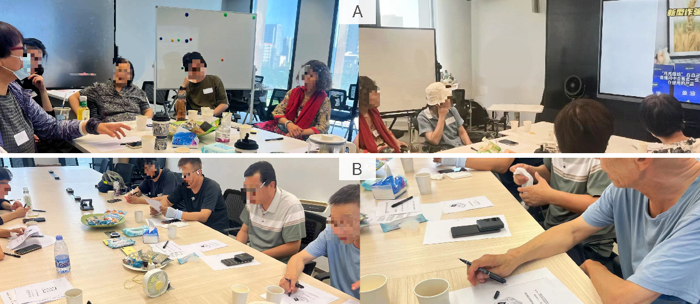
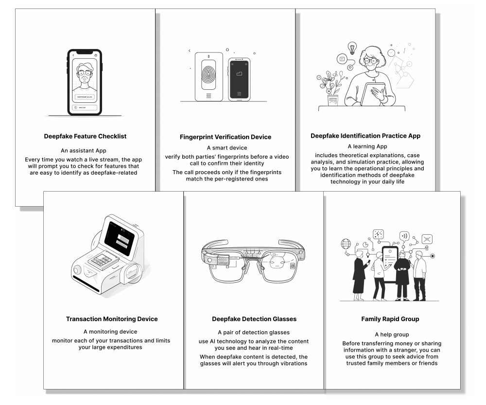

2025 / RtD
[RtD] Hear Us, then Protect Us - Designing with Older Adults Against Deepfake Scams
Deepfake scams are often approached as a detection challenge, and older adults are frequently positioned as passive recipients of protection. This project reframes safeguarding as a design problem grounded in older adults’ interpretations of scams and their expectations for intervention—especially when “protection” may conflict with autonomy and decision-making.
We created a shared “playground” for designers and older adults by staging a participatory workshop in Beijing with 10 older adults (aged 55–75), structured around two segments: Situate (deepfake scam case analysis) and Critique (questionable safeguarding concepts). To ground the discussion, we reviewed 50 search results (200 items) and scripted peer-driven scenarios presented as short news-style videos and flash reports. These cases foregrounded five impersonated roles (e.g., family members, officials, experts, celebrities), and the videos used AI-generated anchor voices with online-sourced images in a 40–50 second format. Participants could choose viewing order via “role keywords,” reinforcing that no single case was privileged.

Instead of asking participants to endorse solutions, we used deliberately provocative “Questionable Concepts” to prompt correction and disagreement; we also clarified these concepts were not created by the research team to reduce politeness pressure. From these discussions, we derive design implications that emphasize respecting older adults’ autonomy, supporting digital literacy for self-protection, and treating safeguarding as shared responsibility across individuals, platforms, and public authorities.

This paper was published at CHI 2025 → Read it here
Yuxiang Zhai, Xiao Xue, Zekai Guo, Tongtong Jin, Yuting Diao, Jihong Jeung∗